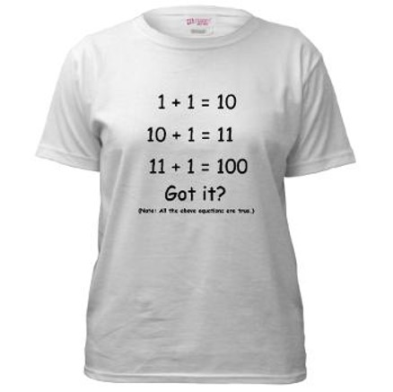
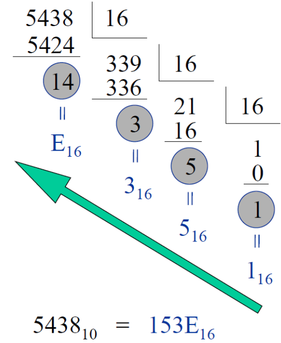
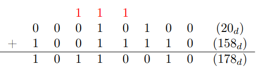
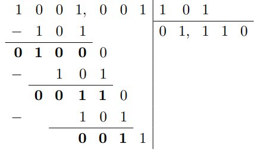

Les conversions :
Avant de parler de réseaux à proprement dit, il faut parler des différents systèmes de numérotation. Il existe plusieurs systèmes de numérotation :
-
Système décimal (base 10) : C'est le système de numérotation que nous utilisons couramment dans notre vie quotidienne. Il utilise dix chiffres, de 0 à 9, et repose sur des puissances de 10. Chaque position dans un nombre décimal représente une puissance de 10.
-
Système binaire (base 2) : C'est le système de numérotation fondamental utilisé en informatique et en électronique. Il utilise seulement deux chiffres, 0 et 1. Chaque position dans un nombre binaire représente une puissance de 2.
-
Système octal (base 8) : Ce système utilise huit chiffres, de 0 à 7. Chaque position dans un nombre octal représente une puissance de 8.
-
Système hexadécimal (base 16) : Ce système utilise seize chiffres, de 0 à 9, suivis des lettres A à F (représentant les valeurs 10 à 15). Il est couramment utilisé en informatique pour représenter des valeurs binaires de manière plus compacte. Chaque position dans un nombre hexadécimal représente une puissance de 16.
Pour convertir les systèmes de numérotation entre eux, il faut utiliser diverses techniques de conversions décrites ci-dessous :
Décimal → Binaire :

-
Faire des divisions entières par 2 du nombre décimal.
-
S'il y a un reste, reporter 1 à droite.
-
Lire le nombre binaire de bas en haut.
Binaire → Décimal :
Avant de commencer cette conversion, il faut connaître les puissances de 2 car le format binaire est en base 2 :
-
20 = 1
-
21 = 2
-
22 = 4
-
23 = 8
-
24 = 16
-
25 = 32
-
26 = 64
-
27 = 128
-
28 = 256
-
29 = 512
-
210 = 1024
-
211 = 2048
-
212 = 4096
-
213 = 8192
-
214 = 16384
-
215 = 32768
-
216 = 65536
Ensuite, pour les calculs, 1 + 1 = 2 ou 1 + 1 = 10 selon le format.
Finalement, pour la conversion binaire vers décimal, il faut lire le nombre binaire de droite à gauche en commençant à 0.
Par exemple, voici les détails de la conversion de 100101012 en 14910 :
10010101012
= 1 * 20 + 0 * 21 + 1 * 22 + 0 * 23 + 1 * 24 + 0 * 25 + 0 * 26 + 1 * 27
= 1 + 0 + 4 + 0 + 16 + 0 + 0 + 128
= 14910Décimal → Hexadécimal :
Pour cette conversion, il faut savoir compter en hexadécimal :
-
010 = 016
-
110 = 116
-
210 = 216
-
310 = 316
-
410 = 416
-
510 = 516
-
610 = 616
-
710 = 716
-
810 = 816
-
910 = 916
-
1010 = A16
-
1110 = B16
-
1210 = C16
-
1310 = D16
-
1410 = E16
-
1510 = F16

-
Faire une division euclidienne par 16 du nombre décimal.
-
Convertir le reste en hexadécimal (ex : 14 → E).
-
Poursuivre jusqu'à une solution inférieure à 16.
-
Lire de bas en haut.
Hexadécimal → Décimal :
Comme pour la conversion binaire vers décimal, il faut d'abord connaître les puissances de 16 car, cette fois-ci, le format hexadécimal est en base 16 :
-
160 = 1
-
161 = 16
-
162 = 256
-
163 = 4096
-
164 = 65526
-
165 = 1048576
-
166 = 16777216
-
167 = 268435456
-
168 = 4294967296
-
169 = 68719476736
-
1610 = 1099511627776
Finalement, il faut lire le chiffre hexadécimal de droite à gauche en commençant à 0.
Donc, voici les détails de la conversion de 153E16 en 543810 :
153E16
= 14 * 160 + 3 * 16 1 + 5 * 162 + 1 * 163
= 14 * 1 + 3 * 16 + 5 * 256 + 1 * 4096
= 543810Hexadécimal → Binaire :
Pour cette conversion, il faut préciser que chaque chiffre hexadécimal est égal à 4 chiffres binaires car 16 = 24.
Donc, on peut déduire que la conversion se fait selon le schéma suivant :
-
016 = 00002
-
116 = 00012
-
216 = 00102
-
316 = 00112
-
416 = 01002
-
516 = 01012
-
616 = 01102
-
716 = 01112
-
816 = 10002
-
916 = 10012
-
A16 = 10102
-
B16 = 10112
-
C16 = 11002
-
D16 = 11012
-
E16 = 11102
-
F16 = 11112
Donc, pour la conversion de 39D16 en 0011100111012, on remplace chaque chiffre hexadécimal par son équivalent binaire (en 4 chiffres).
On peut également supprimer les 0 en début de nombre et dire que la conversion de 39D16 devienne ainsi 11100111012.
Binaire → Hexadécimale :
Pour cette conversion, on doit regrouper les chiffrs binaires en groupe de 4 (en commençant par la fin du nombre, c'est-dire lire le nombre de droite à gauche) et remplacer chaque groupe de 4 chiffres binaires par son équivalent hexadécimal.
Donc, la conversion de 10100100100011002 en hexadécimal devient 148C16.
Finalement, si le nombre binaire ne possède pas de multiple de 4 chiffres, il faut rajouter des 0 supplémentaires jusqu'à avaoir un multiple de 4 chiffres.
Pour l'exemple, 11100110112 ne possède pas un multiple de 4 chiffres et doit se transformer en 0011100110112 avant de se convertir en hexadécimal. Le résultat final est 39B16.
Binaire → Octale :
C'est plus ou moins la même techique que la conversion binaire vers hexadécimale sauf que ce n'est pas des groupes de 4 chiffres mais de 3 chiffres car 23 = 8 (Petit rappel : l'octal est en base 8).
Décimale → Octale :
C'est plus ou moins la même techique que la conversion décimale vers hexadécimale sauf qu'au lieu de diviser par 16 on divise par 8.
Octale → Binaire :
C'est plus ou moins la même technique que la conversion hexadécimale vers binaire mais, cette fois-ci, en utilisant le schéma suivant :
-
08 = 0002
-
18 = 0012
-
28 = 0102
-
38 = 0112
-
48 = 1002
-
58 = 1012
-
68 = 1102
-
78 = 1112
Infos supplémentaires :
Pour convertir de hexadécimal à octal et vice versa, il faut soit passer par le binaire ou le décimal en intermédiaire.
Un bit est un chiffre binaire. Un byte (ou un octet en français) est la plus petite unité adressable qui est composée de 8 bits.
Un byte peut représenter 256 valeurs distinctes (28), allant de 0 à 255. Ils sont souvent utilisés pour stocker des caractères, des nombres et d'autres données dans les systèmes informatiques.
Pemdas binaire :
PEMDAS est l'abréviation de "Parenthèse Exposant Division Addition Soustraction".
Addition d'un nombre binaire :
On effectue la somme binaire, bit par bit, avec report éventuel. On travaille sur un nombre de bits fixés.
Exemple :
Note : Attention, si la somme donne lieu à un dépassement de capacité, celui-ci donnera un nombre négatif. Le résultat sera faux et le processeur ne détectera pas l'erreur.
Représentation des nombres entiers négatifs :
La première idée pour représenter les nombres négatifs était de réserver un bit pour le signe en début de nombre. Cepensant, cela causait un problème lors des additions d'un entier positif avec un négatif car le résultat donnait le négatif de la somme des valeurs absolues des deux termes. Pour palier à ça, on utilise le complément à 2 qui consiste à :
-
Nombre binaire positif.
-
Inversion des bits de ce nombre (complément à 1).
-
On ajoute 1 (on ignore le dépassemnt de capacité éventuel).
Pour lire un nombre négatif, on fait l'opération inverse :
-
Inversion des bits de ce nombre (complément à 1).
-
On ajoute 1 (on ignore le dépassement de capacité éventuel).
Note : L'étendue des entiers signés sur n bits est [-2n-1; 2n-1 - 1] et celle des entiers non-signés [0; 2n - 1].
Soustraction d'un nombre binaire :
Pour soustraire deux nombres binaires, on utilise le complément à deux du nombre à soustraire qu'on additionne ensuite au premier terme.
Multiplication d'un nombre binaire :
La multiplication d'un nombre binaire est réalisée par une suite de sommes. On peut cependant passer par un simple décalage n bits vers la gauche lorsqu'on multiplie par une puissance n de 2.
Division d'un nombre binaire :
La divion d'un nombre binaire est réalisée par une suite de soustractions.
Exemple :
On continue la division jusqu'à ce que le reste soit nul ou que le quotient ait atteint la limite maximum autorisée par le nombre de bits alloué. Si on divisine par une puissance n de 2, on peut passer par un simple décalage de n bits vers la droite (on a alors n nombres derrières la virgule, si les ner nombres ne sont pas égales à 0).